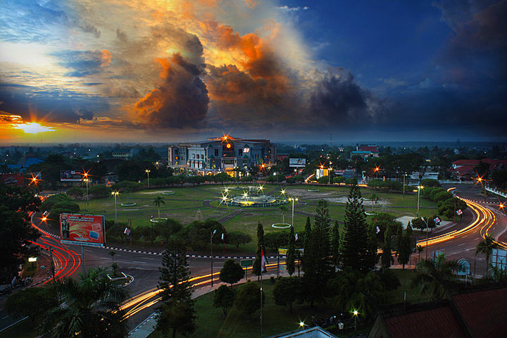

<div id="app">
    <!-- App root element -->

    <div class="view view-main">
        <div class="page" data-name="sejarah">
            <div class="page-content">
                <div class="block hero-sejarah">
                    <div class="navbar">
                        <!-- <div class="navbar-bg"></div> -->
                        <div class="navbar-inner">
                            <div class="left">
                                <a href="#" class="back" data-transition="f7-cover-v"><i
                                        class="f7-icons text-color-white">arrow_left</i></a>
                            </div>
                            <div class="title">Sejarah Palangka Raya</div>
                        </div>
                    </div>
                </div>
                <div class="block konten-sejarah">
                    
                </div>
                <div class="block sejarah">
                    <div class="row">

                        <div class="row deskripsi">
                            <p>Menurut <strong> Staatsblad van Nederlandisch Indië</strong> tahun 1849, wilayah
                                Dayak Besar termasuk
                                daerah ini bagian dari dalam <strong> zuid-ooster-afdeeling </strong> berdasarkan
                                <strong> Bêsluit van den
                                    Minister
                                    van Staat, Gouverneur-Generaal van Nederlandsch-Indie </strong>, pada 27 Agustus
                                1849, No.
                                8
                                Terbentuknya Provinsi Kalimantan Tengah melalui proses yang cukup panjang sehingga
                                mencapai puncaknya pada tanggal 23 Mei 1957 dan dikuatkan dengan Undang-undang
                                Darurat
                                Nomor 10 tahun 1957, yaitu tentang Pembentukan Daerah Swatantra Tingkat I Kalimantan
                                Tengah. Sejak saat itu Provinsi Kalimantan Tengah resmi sebagai daerah otonom,
                                sekaligus
                                sebagai hari jadi Provinsi Kalimantan Tengah.</p>
                            <p>
                                Tiang pertama pembangunan Kota Palangka Raya dilakukan oleh Presiden Republik
                                Indonesia pada saat itu, Soekarno pada tanggal 17 Juli 1957 dengan ditandai
                                peresmian Monumen/Tugu Ibu Kota Provinsi Kalimantan Tengah di Pahandut yang
                                mempunyai makna:
                            </p>
                            <ul>
                                <li>Angka 17 melambangkan hikmah Proklamasi Kemerdekaan Republik Indonesia.
                                </li>
                                <li>Tugu Api berarti api tak kunjung padam, semangat kemerdekaan dan
                                    membangun.</li>
                                <li>Pilar yang berjumlah 17 berarti senjata untuk berperang.</li>
                                <li>Segi Lima Bentuk Tugu melambangkan Pancasila mengandung makna Ketuhanan Yang
                                    Maha Esa.</li>
                            </ul>
                            <p> Kemudian berdasarkan Undang-undang Nomor 21 Tahun 1958 Ibu Kota Provinsi yang
                                dulunya Pahandut berganti nama dengan Palangka Raya.
                            </p>
                        </div>
                    </div>
                </div>

                <!-- Referensi -->
                <div class="block-title">Refrensi</div>
                <div class="list accordion-list">
                    <ul>
                        <li class="accordion-item"><a class="item-content item-link" href="#">
                                <div class="item-inner">
                                    <div class="item-title">Sumber Data</div>
                                </div>
                            </a>
                            <div class="accordion-item-content">
                                <div class="block">
                                    <a href="https://id.wikipedia.org/wiki/Kota_Palangka_Raya#Suku_Bangsa"
                                        class="link external" target="_blank">
                                        Wikipedia
                                    </a>
                                </div>
                            </div>
                        </li>
                        <li class="accordion-item"><a class="item-content item-link" href="#">
                                <div class="item-inner">
                                    <div class="item-title">Sumber Gambar</div>
                                </div>
                            </a>
                            <div class="accordion-item-content">
                                <div class="block">
                                    <a href="https://kataomed.com/jadwal-bus/jadwal-bus-damri-dari-palangkaraya-ke-semua-kota-dan-harga-tiketnya"
                                        class="link external" target="_blank">
                                        Gambar 1
                                    </a>
                                    <a href="https://www.bloggerkalteng.id/2017/06/video-bundaran-besar-kota-palangka-raya.html"
                                        class="link external" target="_blank">
                                        Gambar 2
                                    </a>
                                </div>
                            </div>
                        </li>
                    </ul>
                </div>
                <!-- penutup referensi -->

            </div>
        </div>
    </div>
</div><!-- App root element -->